If some serious pastoral benefit is to be gained, an appropriately corresponding Votive Mass may be used, at the direction of the Ordinary, or with his permission, except on Solemnities, on the Sundays of Advent, Lent, and Easter, on days within the Octave of Easter, on the Commemoration of All the Faithful Departed (All Souls’ Day), on Ash Wednesday, and on the weekdays of Holy Week.
Votive Masses are in principle forbidden on days on which there occurs an Obligatory Memorial, on a weekday of Advent up to and including December 16, on a weekday of Christmas Time from January 2, or on a weekday of Easter Time after the Octave of Easter. However, for pastoral reasons, as determined by the rector of the church or the Priest Celebrant himself, an appropriately corresponding Votive Mass may be used in celebration of Mass with the people.
On weekdays in Ordinary Time, even if an Optional Memorial occurs, a Votive Mass may be chosen by the Priest Celebrant for the sake of the devotion of the faithful.
1. The Most Holy Trinity
In this Mass, the color white is used.
Entrance Antiphon
Blest be God the Father, and the Only Begotten Son of God,
and also the Holy Spirit, for he has shown us his merciful love.
Collect
God our Father, who, by sending into the world
the Word of truth and the Spirit of sanctification,
made known to the human race your wondrous mystery,
grant us, we pray, that in professing the true faith
we may acknowledge the Trinity of eternal glory
and adore your Unity, powerful in majesty.
Through our Lord Jesus Christ, your Son,
who lives and reigns with you in the unity of the Holy Spirit,
God, for ever and ever.
Prayer over the Offerings
Sanctify by the invocation of your name,
we pray, O Lord our God,
this oblation of our service,
and by it make of us an eternal offering to you.
Through Christ our Lord.
Preface: The mystery of the Most Holy Trinity.
V. The Lord be with you.
R. And with your spirit.
V. Lift up your hearts.
R. We lift them up to the Lord.
V. Let us give thanks to the Lord our God.
R. It is right and just.
It is truly right and just, our duty and our salvation,
always and everywhere to give you thanks,
Lord, holy Father, almighty and eternal God.
For with your Only Begotten Son and the Holy Spirit
you are one God, one Lord:
not in the unity of a single person,
but in a Trinity of one substance.
For what you have revealed to us of your glory
we believe equally of your Son
and of the Holy Spirit,
so that, in the confessing of the true and eternal Godhead,
you might be adored in what is proper to each Person,
their unity in substance,
and their equality in majesty.
For this is praised by Angels and Archangels,
Cherubim, too, and Seraphim,
who never cease to cry out each day,
as with one voice they acclaim:
Holy, Holy, Holy Lord God of hosts...
Text with music:


Communion AntiphonGal 4: 6
Since you are children of God,
God has sent into your hearts the Spirit of his Son,
the Spirit who cries out: Abba, Father.
Prayer after Communion
May receiving this Sacrament, O Lord our God,
bring us health of body and soul,
as we confess your eternal holy Trinity and undivided Unity.
Through Christ our Lord.
2. The Mercy of God
In this Mass, the color white is used. This Mass may not be said on the Second Sunday of Easter.
Entrance AntiphonCf. Jer 31: 3; 1 Jn 2: 2
God has loved us with an everlasting love;
he sent his Only Begotten Son as an expiation for our sins
and not for our sins alone, but for those of all the world.
Or:Ps 89 (88): 2
I will sing for ever of your mercies, O Lord;
through all ages my mouth will proclaim your fidelity.
Collect
O God, whose mercies are without number
and whose treasure of goodness is infinite,
graciously increase the faith of the people consecrated to you,
that all may grasp and rightly understand
by whose love they have been created,
through whose Blood they have been redeemed,
and by whose Spirit they have been reborn.
Through our Lord Jesus Christ, your Son,
who lives and reigns with you in the unity of the Holy Spirit,
God, for ever and ever.
Prayer over the Offerings
Receive our oblations in your mercy, O Lord,
and transform them into the Sacrament of redemption,
the memorial of your Son’s Death and Resurrection,
so that, by the power of this sacrifice
and with constant trust in Christ,
we may come to eternal life.
Through Christ our Lord.
Communion AntiphonPs 103 (102): 17
The mercy of the Lord is everlasting
upon those who hold him in fear.
Or:Jn 19: 34
One of the soldiers opened his side with a lance,
and at once there came forth blood and water.
Prayer after Communion
Grant to us, O merciful God,
that, nourished by the Body and Blood of your Son,
we may draw confidently from the wellsprings of mercy
and show ourselves ever more compassionate
towards our brothers and sisters.
Through Christ our Lord.
3. Our Lord Jesus Christ, The Eternal High Priest
In this Mass, the color white is used.
Entrance AntiphonPs 110 (109): 4
The Lord has sworn an oath he will not change:
You are a priest for ever, according to the order of Melchizedek.
Collect
O God, who for your glory
and the salvation of the human race
willed to establish Christ as the eternal High Priest,
grant that the people he has gained for you by his Blood
may, through their participation in his memorial,
experience the power of his Cross and Resurrection.
Who lives and reigns with you in the unity of the Holy Spirit,
God, for ever and ever.
Prayer over the Offerings
Grant us, O Lord, we pray,
that we may participate worthily in these mysteries,
for, whenever the memorial of this sacrifice is celebrated,
the work of our redemption is accomplished.
Through Christ our Lord.
Preface of the Most Holy Eucharist.
Communion Antiphon1 Cor 11: 24-25
This is the Body that will be given up for you;
this is the Chalice of the new covenant in my Blood, says the Lord;
do this, whenever you receive it in memory of me.
Prayer after Communion
We pray, O Lord, that through our partaking in this sacrifice,
which your Son commanded to be offered in his memory,
you may make us together with him
an everlasting oblation to you.
Through Christ our Lord.
4. The Mystery of the Holy Cross
In this Mass, the color red is used.
Entrance AntiphonCf. Gal 6: 14
We should glory in the Cross of our Lord Jesus Christ,
in whom is our salvation, life and resurrection,
through whom we are saved and delivered.
Collect
O God, who willed that your Only Begotten Son
should undergo the Cross to save the human race,
grant, we pray,
that we, who have known his mystery on earth,
may merit the grace of his redemption in heaven.
Through our Lord Jesus Christ, your Son,
who lives and reigns with you in the unity of the Holy Spirit,
God, for ever and ever.
Prayer over the Offerings
May this oblation, O Lord,
which on the altar of the Cross
canceled the offense of the whole world,
cleanse us, we pray, of all our sins.
Through Christ our Lord.
Preface: The victory of the glorious Cross.
V. The Lord be with you.
R. And with your spirit.
V. Lift up your hearts.
R. We lift them up to the Lord.
V. Let us give thanks to the Lord our God.
R. It is right and just.
It is truly right and just, our duty and our salvation,
always and everywhere to give you thanks,
Lord, holy Father, almighty and eternal God,
through Christ our Lord.
For you placed the salvation of the human race
on the wood of the Cross,
so that, where death arose,
life might again spring forth
and the evil one, who conquered on a tree,
might likewise on a tree be conquered,
through Christ our Lord.
Through him the Angels praise your majesty,
Dominions adore and Powers tremble before you.
Heaven and the Virtues of heaven and the blessed Seraphim
worship together with exultation.
May our voices, we pray, join with theirs
in humble praise, as we acclaim:
Holy, Holy, Holy Lord God of hosts...
Text with music:
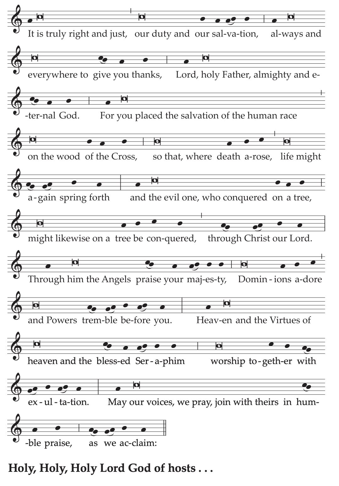
Preface I of the Passion of the Lord may also be used.
Communion AntiphonJn 12: 32
When I am lifted up from the earth,
I will draw everyone to myself, says the Lord.
Prayer after Communion
Having been nourished by your holy banquet,
we beseech you, Lord Jesus Christ,
to bring those you have redeemed
by the wood of your life-giving Cross
to the glory of the resurrection.
Who live and reign for ever and ever.
5. The Most Holy Eucharist
In this Mass, the color white is used.
Entrance AntiphonPs 78 (77): 23-25
The Lord opened the gates of heaven,
and rained down manna upon them to eat, and gave them bread from heaven:
man ate the bread of angels.
Collect
O God, who have accomplished the work of human redemption
through the Paschal Mystery of your Only Begotten Son,
graciously grant that we, who confidently proclaim,
under sacramental signs, the Death and Resurrection of Christ,
may experience continued increase of your saving grace.
Through our Lord Jesus Christ, your Son,
who lives and reigns with you in the unity of the Holy Spirit,
God, for ever and ever.
Prayer over the Offerings
Celebrating the memorial of our salvation,
we humbly beseech your mercy, O Lord,
that this Sacrament of your loving kindness
may be for us the sign of unityand the bond of charity.
Through Christ our Lord.
Preface of the Most Holy Eucharist.
Communion AntiphonJn 6: 51-52
I am the living bread,
that came down from heaven, says the Lord.
Whoever eats of this bread will live for ever,
and the bread that I will give is my flesh for the life of the world.
Prayer after Communion
May sharing at the heavenly table
sanctify us, Lord, we pray,
so that through the Body and Blood of Christ
the whole family of believers may be bound together.
Through Christ our Lord.
As a Votive Mass of the Most Holy Eucharist, the Votive Mass or Our Lord Jesus Christ, the Eternal High Priest may also be used, or the Mass of the Solemnity of the Most Holy Body and Blood of Christ.
6. The Most Holy Name of Jesus
In this Mass, the color white is used.
Entrance AntiphonPhil 2: 10-11
At the name of Jesus every knee should bend
of those in heaven and on earth and under the earth,
and every tongue confess
that Jesus Christ is Lord, to the glory of God the Father.
Collect
As we venerate the most holy Name of Jesus,
mercifully grant us, Lord,
that, savoring its sweetness in this life,
we may be filled with everlasting joy
in our heavenly homeland.
Through our Lord Jesus Christ, your Son,
who lives and reigns with you in the unity of the Holy Spirit,
God, for ever and ever.
Prayer over the Offerings
Be pleased, almighty Father,
to accept our offerings in the Name of Jesus,
for we are confident that we shall receive
whatever we ask in your Son’s Name,
as he himself, with such kindness, promises.
Who lives and reigns for ever and ever.
Communion AntiphonActs 4: 12
There is no other name under heaven given among the human race
by which we must be saved.
Prayer after Communion
Grant us in your mercy, O Lord, we pray,
that in these sacred mysteries
we may do worthy homage to the Lord Jesus,
for it is your will that at his Name
every knee should bend
and in him all people find salvation.
Who lives and reigns for ever and ever.
7. The Most Precious Blood of Our Lord Jesus Christ
In this Mass, the color red is used.
Entrance AntiphonCf. Rev 5: 9-10
You have redeemed us, Lord, by your Blood,
from every tribe and tongue and people and nation,
and have made us into a kingdom for our God.
Collect
O God, who by the Precious Blood of your Only Begotten Son
have redeemed the whole world,
preserve in us the work of your mercy,
so that, ever honoring the mystery of our salvation,
we may merit to obtain its fruits.
Through our Lord Jesus Christ, your Son,
who lives and reigns with you in the unity of the Holy Spirit,
God, for ever and ever.
Prayer over the Offerings
As we offer our oblation to your majesty, O Lord,
may we draw near in these mysteries
to Jesus, the Mediator of the New Covenant,
and celebrate anew the sprinkling of his Blood,
in which lies all our salvation.
Through Christ our Lord.
Preface I of the Passion of the Lord.
Communion AntiphonCf. 1 Cor 10: 16
The chalice of blessing that we bless
is a communion in the Blood of Christ;
and the bread that we break
is a sharing in the Body of the Lord.
Prayer after Communion
Refreshed, O Lord, by this saving food and drink,
we pray that we may always be bathed
in the Blood of our Savior,
so that it may become for us
a spring of water welling up to eternal life.
Through Christ our Lord.
Or:
Restored with heavenly food and drink,
we beseech you, almighty God,
to protect from fear of their enemies
those you have redeemed by the Precious Blood of your Son.
Who lives and reigns for ever and ever.
8. The Most Sacred Heart of Jesus
In this Mass, the color white is used.
Entrance AntiphonPs 33 (32): 11, 19
The designs of his Heart are from age to age,
to rescue their souls from death
and to keep them alive in famine.
Collect
Clothe us, Lord God,
with the virtues of the Heart of your Son
and set us aflame with his love,
that, conformed to his image,
we may merit a share in eternal redemption.
Through our Lord Jesus Christ, your Son,
who lives and reigns with you in the unity of the Holy Spirit,
God, for ever and ever.
Prayer over the Offerings
O God, Father of mercies,
who, because of the great love with which you loved us,
with untold goodness gave us your Only Begotten Son,
grant, we pray,
that, being perfectly united with him,
we may offer you worthy homage.
Through Christ our Lord.
Preface: The boundless charity of Christ.
V. The Lord be with you.
R. And with your spirit.
V. Lift up your hearts.
R. We lift them up to the Lord.
V. Let us give thanks to the Lord our God.
R. It is right and just.
It is truly right and just, our duty and our salvation,
always and everywhere to give you thanks,
Lord, holy Father, almighty and eternal God,
through Christ our Lord.
For raised up high on the Cross,
he gave himself up for us with a wonderful love
and poured out blood and water from his pierced side,
the wellspring of the Church’s Sacraments,
so that, won over to the open heart of the Savior,
all might draw water joyfully from the springs of salvation.
And so, with all the Angels and Saints,
we praise you, as without end we acclaim:
Holy, Holy, Holy Lord God of hosts...
Text with music:
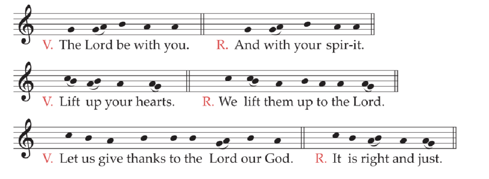
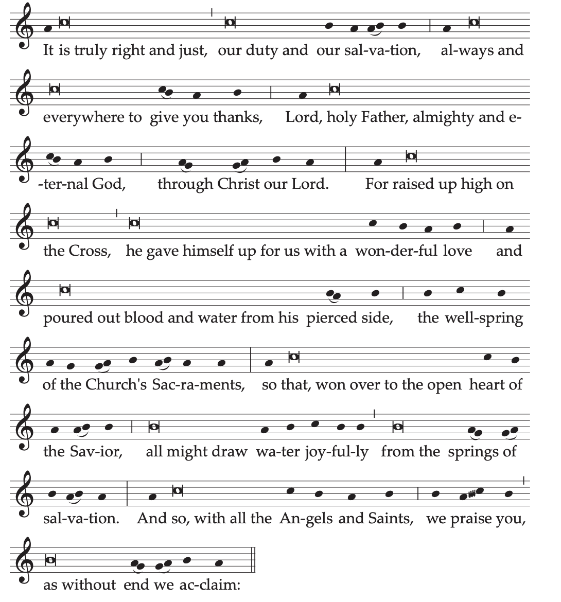
Communion AntiphonCf. Jn 7: 37-38
Thus says the Lord:
Let whoever is thirsty come to me and drink.
Streams of living water will flow
from within the one who believes in me.
Or:Jn 19: 34
One of the soldiers opened his side with a lance,
and at once there came forth blood and water.
Prayer after Communion
Made partakers in your Sacrament of charity,
we humbly implore your mercy, Lord,
that we may be conformed to Christ on earth
and merit to be coheirs of his glory in heaven.
Who lives and reigns for ever and ever.
As a Votive Mass, the Mass of the Solemnity of the Most Sacred Heart of Jesus may also be used.
9. The Holy Spirit
A
In this Mass, the color red is used.
Entrance AntiphonRom 5: 5; cf. 8: 11
The love of God has been poured into our hearts
through the Spirit of God dwelling within us.
Collect
O God, who have taught the hearts of the faithful
by the light of the Holy Spirit,
grant that in the same Spirit we may be truly wise
and ever rejoice in his consolation.
Through our Lord Jesus Christ, your Son,
who lives and reigns with you in the unity of the Holy Spirit,
God, for ever and ever.
Prayer over the Offerings
Sanctify, we pray, O Lord, the offerings made here,
and cleanse our hearts by the light of the Holy Spirit.
Through Christ our Lord.
Preface I of the Holy Spirit: The sending of the Spirit by the Lord upon the Church.
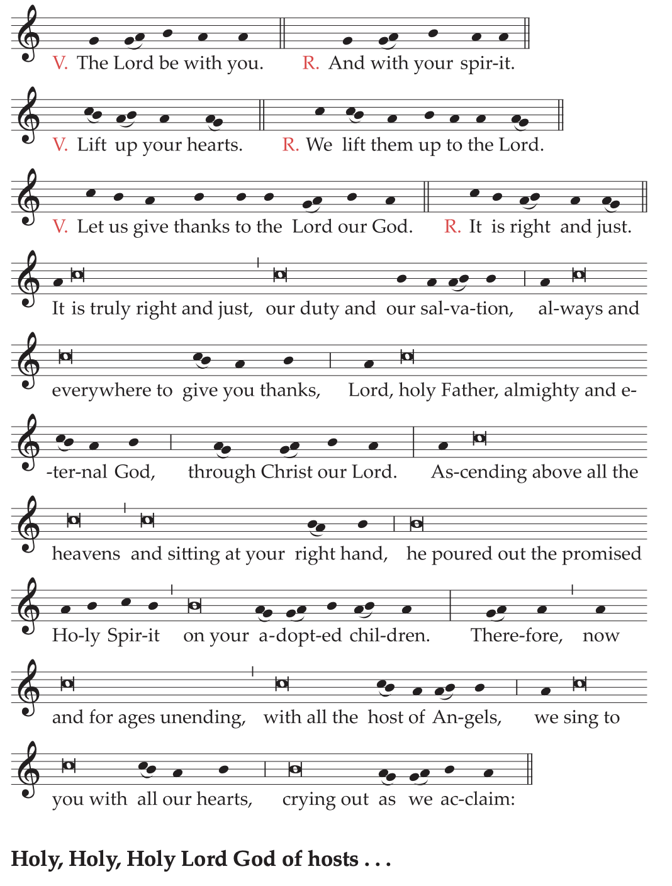
Text without music:
V. The Lord be with you.
R. And with your spirit.
V. Lift up your hearts.
R. We lift them up to the Lord.
V. Let us give thanks to the Lord our God.
R. It is right and just.
It is truly right and just, our duty and our salvation,
always and everywhere to give you thanks,
Lord, holy Father, almighty and eternal God,
through Christ our Lord.
Ascending above all the heavens
and sitting at your right hand,
he poured out the promised Holy Spirit
on your adopted children.
Therefore, now and for ages unending,
with all the host of Angels,
we sing to you with all our hearts,
crying out as we acclaim:
Holy, Holy, Holy Lord God of hosts...
Communion AntiphonCf. Ps 68 (67): 29-30
Confirm, O God, what you have brought about in us,
from your holy temple, which is in Jerusalem.
Prayer after Communion
May the outpouring of the Holy Spirit
cleanse our hearts, O Lord,
and make them fruitful by the inner sprinkling of his dew.
Through Christ our Lord.
B
Entrance AntiphonCf. Jn 14: 26; 15: 26
When the Spirit of truth comes,
he will teach you all truth, says the Lord.
Collect
May the Paraclete who proceeds from you, we pray, O Lord,
enlighten our minds and lead us into all truth,
just as your Son has promised.
Who lives and reigns with you in the unity of the Holy Spirit,
God, for ever and ever.
Or:
O God, to whom every heart lies open,
every desire speaks plainly
and from whom no secret is hidden,
cleanse, we pray, the thoughts of our heart
by the outpouring of the Holy Spirit,
that we may merit to love you perfectly
and offer you worthy praise.
Through our Lord Jesus Christ, your Son,
who lives and reigns with you in the unity of the Holy Spirit,
God, for ever and ever.
Prayer over the Offerings
Look, we pray, O Lord, on the spiritual sacrifice
placed on your altar with loving devotion
and give your servants a right spirit,
so that their faith may make these gifts pleasing to you
and their humility commend them.
Through Christ our Lord.
Preface II of the Holy Spirit: The action of the Spirit in the Church.
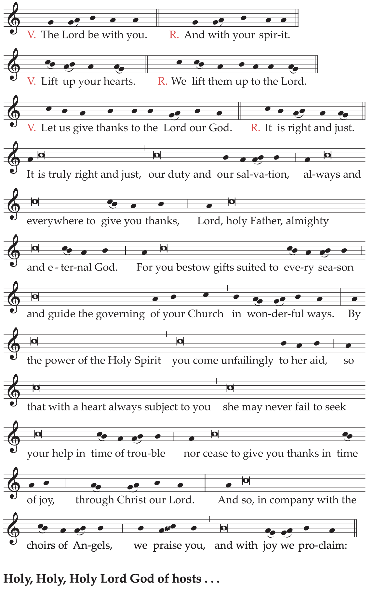
Text without music:
V. The Lord be with you.
R. And with your spirit.
V. Lift up your hearts.
R. We lift them up to the Lord.
V. Let us give thanks to the Lord our God.
R. It is right and just.
It is truly right and just, our duty and our salvation,
always and everywhere to give you thanks,
Lord, holy Father, almighty and eternal God.
For you bestow gifts suited to every season
and guide the governing of your Church in wonderful ways.
By the power of the Holy Spirit
you come unfailingly to her aid,
so that with a heart always subject to you
she may never fail to seek your help in time of trouble
nor cease to give you thanks in time of joy,
through Christ our Lord.
And so, in company with the choirs of Angels,
we praise you, and with joy we proclaim:
Holy, Holy, Holy Lord God of hosts...
Communion AntiphonJn 15: 26; 16: 14
The Spirit, whom I will send you from the Father,
will glorify me, says the Lord.
Prayer after Communion
Lord our God, who have been pleased
to nourish us with heavenly food,
pour, we pray, the delights of your Spirit
into the recesses of our heart,
that what we have devoutly received in time
we may possess as a gift for eternity.
Through Christ our Lord.
C
Entrance AntiphonCf. Lk 4: 18
The Spirit of the Lord is upon me,
he has sent me to preach the good news to the poor, says the Lord.
Collect
O God, who sanctify your universal Church
in every people and nation,
pour out, we pray, the gifts of your Spirit
across the face of the earth,
so that your divine grace, which was at work
when the Gospel was first proclaimed,
may now spread through the hearts of those who believe in you.
Through our Lord Jesus Christ, your Son,
who lives and reigns with you in the unity of the Holy Spirit,
God, for ever and ever.
Or:
O God, by whose Spirit we are governed
and by whose protection we are kept safe,
extend over us your mercy
and give ear to our supplications,
that the faith of those who believe in you
may always be sustained by your gifts.
Through our Lord Jesus Christ, your Son,
who lives and reigns with you in the unity of the Holy Spirit,
God, for ever and ever.
Prayer over the Offerings
May the fire of the Spirit, O Lord,
sanctify the sacrificial gifts offered in your sight,
just as it enkindled the hearts of the disciples of your Son.
Who lives and reigns for ever and ever.
Preface I of the Holy Spirit, or II.
Communion AntiphonCf. Ps 104 (103): 30
Send forth your Spirit, and they shall be created,
and you shall renew the face of the earth.
Prayer after Communion
May these gifts we have consumed
benefit us, O Lord,
that we may always be aflame with the same Spirit
whom you wondrously poured out on your Apostles.
Through Christ our Lord.
10. The Blessed Virgin Mary
In these Masses, the color white is used.
A
Any Mass from the Common of the Blessed Virgin Mary is used, in accordance with the various times of the year.
B. Our Lady, Mother of the Church
Entrance AntiphonCf. Acts 1: 14
The disciples devoted themselves with one accord to prayer
with Mary, the Mother of Jesus.
Collect
O God, Father of mercies,
whose Only Begotten Son, as he hung upon the Cross,
chose the Blessed Virgin Mary, his Mother,
to be our Mother also,
grant, we pray, that with her loving help
your Church may be more fruitful day by day
and, exulting in the holiness of her children,
may draw to her embrace all the families of the peoples.
Through our Lord Jesus Christ, your Son,
who lives and reigns with you in the unity of the Holy Spirit,
God, for ever and ever.
Prayer over the Offerings
Receive our offerings, O Lord,
and transform them into the mystery of salvation,
so that by its power we may be set aflame
with the charity of the Virgin Mary, Mother of the Church,
and with her may be united more closely
to the work of redemption.
Through Christ our Lord.
Preface: Mary, Model and Mother of the Church.
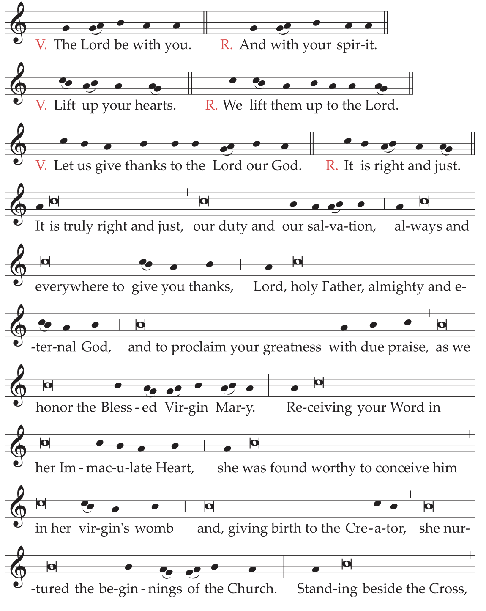
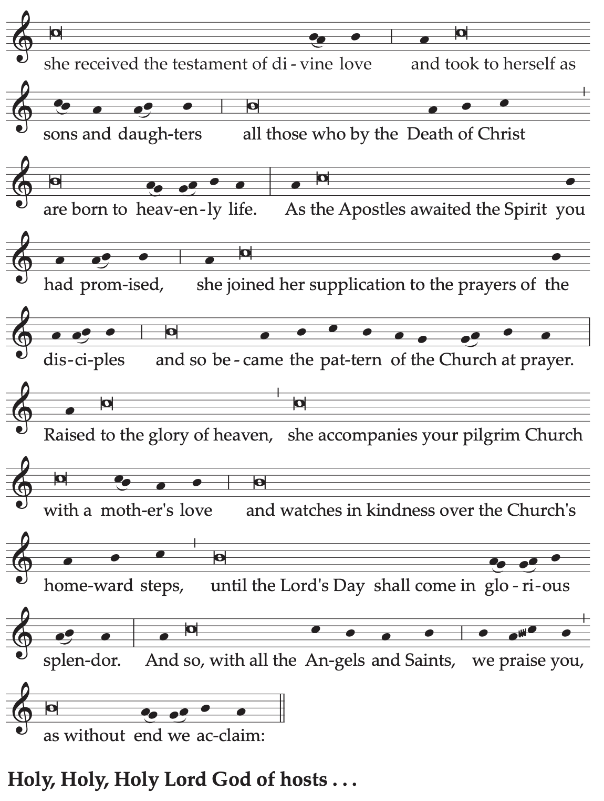
Text without music:
V. The Lord be with you.
R. And with your spirit.
V. Lift up your hearts.
R. We lift them up to the Lord.
V. Let us give thanks to the Lord our God.
R. It is right and just.
It is truly right and just, our duty and our salvation,
always and everywhere to give you thanks,
Lord, holy Father, almighty and eternal God,
and to proclaim your greatness with due praise,
as we honor the Blessed Virgin Mary.
Receiving your Word in her Immaculate Heart,
she was found worthy to conceive him in her virgin’s womb
and, giving birth to the Creator,
she nurtured the beginnings of the Church.
Standing beside the Cross,
she received the testament of divine love
and took to herself as sons and daughters
all those who by the Death of Christ
are born to heavenly life.
As the Apostles awaited the Spirit you had promised,
she joined her supplication to the prayers of the disciples
and so became the pattern of the Church at prayer.
Raised to the glory of heaven,
she accompanies your pilgrim Church with a mother’s love
and watches in kindness over the Church’s homeward steps,
until the Lord’s Day shall come in glorious splendor.
And so, with all the Angels and Saints,
we praise you, as without end we acclaim:
Holy, Holy, Holy Lord God of hosts...
Communion AntiphonCf. Jn 2: 1, 11
A wedding was held in Cana of Galilee,
and the mother of Jesus was there;
then Jesus performed the first of his signs
and manifested his glory,
and his disciples believed in him.
Or:Cf. Jn 19: 26-27
As he hung upon the cross,
Jesus said to the disciple whom he loved:
Behold your mother.
Prayer after Communion
Having received the pledge of redemption and of life,
we humbly pray, O Lord,
that, with the Blessed Virgin’s motherly help,
your Church may teach all nations
by proclaiming the Gospel
and, through the grace of the outpouring of the Spirit,
fill the whole earth.
Through Christ our Lord.
C. The Most Holy Name of Mary
Entrance AntiphonCf. Jdt 13: 18-19
Blessed are you, O Virgin Mary, by the Lord God Most High,
above all women on the earth;
for he has so exalted your Name,
that your praise shall be undying on our lips.
Collect
O God, who chose the Blessed Virgin Mary,
full of your grace, from among women
to become the Mother of your Son, our Redeemer,
mercifully grant that, venerating her holy name,
we may escape the dangers of this present age
and obtain with her life eternal.
Through our Lord Jesus Christ, your Son,
who lives and reigns with you in the unity of the Holy Spirit,
God, for ever and ever.
Or:
O God, whose Son, dying on the altar of the Cross,
willed that the most Blessed Virgin Mary,
whom he had chosen as his Mother,
should be our Mother also,
graciously grant, we pray,
that we, who fly to her protection,
may find comfort by invoking our Mother’s name.
Through our Lord Jesus Christ, your Son,
who lives and reigns with you in the unity of the Holy Spirit,
God, for ever and ever.
Prayer over the Offerings
Look favorably on the offerings made here, O Lord,
that through the intercession of Blessed Mary ever-Virgin
our hearts, filled with the light of the Holy Spirit,
may constantly strive to cling to Christ, your Son.
Who lives and reigns for ever and ever.
Preface of the Blessed Virgin Mary.
Communion AntiphonCf. Lk 1: 26-27
The angel Gabriel was sent from God to a virgin,
and the virgin’s Name was Mary.
Prayer after Communion
Grant us, we pray, O Lord,
whom you have strengthened at the table of word and Sacrament,
that, with Blessed Mary as our patron and guide,
we may reject whatever is contrary to the name of Christian
and follow whatever accords with it.
Through Christ our Lord.
D. Our Lady, Queen of Apostles
Entrance AntiphonCf. Acts 1: 14
The disciples devoted themselves with one accord to prayer
with Mary, the Mother of Jesus.
Collect
O God, who gave the Holy Spirit to your Apostles
as they prayed with Mary the Mother of Jesus,
grant that through her intercession
we may faithfully serve your majesty
and extend, by word and example, the glory of your name.
Through our Lord Jesus Christ, your Son,
who lives and reigns with you in the unity of the Holy Spirit,
God, for ever and ever.
Prayer over the Offerings
By your favor, O Lord,
and through the intercession of Blessed Mary ever-Virgin,
may our offering obtain for your Church this grace,
that she may grow in the number of the faithful
and be ever radiant with an abundance of virtues.
Through Christ our Lord.
Preface of the Blessed Virgin Mary.
Communion AntiphonCf. Lk 11: 27-28
Blessed is the womb that bore Christ the Lord;
blessed, rather, are those who hear the word of God and keep it.
Prayer after Communion
Having partaken, O Lord, of these helps to our salvation
in our commemoration of the Blessed Virgin Mary,
Queen of Apostles,
we humbly beseech you,
that, persevering in your will
and in service of the human family,
your people may draw ever closer to salvation.
Through Christ our Lord.
11. The Holy Angels
In this Mass, the color white is used.
Entrance AntiphonCf. Ps 103 (102): 20
Bless the Lord, all you his angels, mighty in power,
fulfilling his word and heeding his voice.
Collect
O God, who dispose in marvelous order
ministries both angelic and human,
graciously grant
that our life on earth may be defended
by those who watch over us
as they minister perpetually to you in heaven.
Through our Lord Jesus Christ, your Son,
who lives and reigns with you in the unity of the Holy Spirit,
God, for ever and ever.
Prayer over the Offerings
We offer you a sacrifice of praise, O Lord,
humbly entreating,
that, as these gifts are borne by the ministry of Angels
into the presence of your majesty,
so you may receive them favorably
and make them profitable for our salvation.
Through Christ our Lord.
Preface: God glorified through the Angels.
V. The Lord be with you.
R. And with your spirit.
V. Lift up your hearts.
R. We lift them up to the Lord.
V. Let us give thanks to the Lord our God.
R. It is right and just.
It is truly right and just, our duty and our salvation,
always and everywhere to give you thanks,
Lord, holy Father, almighty and eternal God,
and to praise you without end
in your Archangels and Angels.
For the honor we pay the angelic creatures
in whom you delight
redounds to your own surpassing glory,
and by their great dignity and splendor
you show how infinitely great you are,
to be exalted above all things,
through Christ our Lord.
Through him the multitude of Angels extols your majesty,
and we are united with them in exultant adoration,
as with one voice of praise we acclaim:
Holy, Holy, Holy Lord God of hosts...
Text with music:
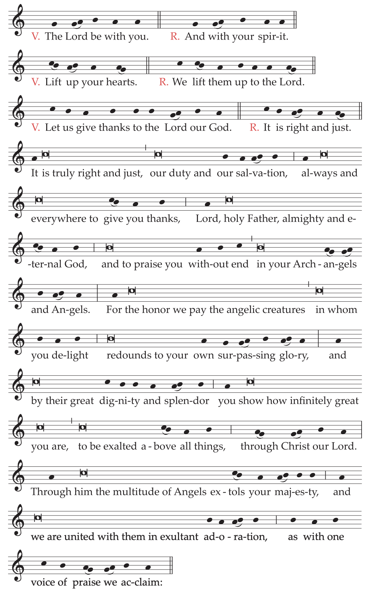
Communion AntiphonPs 138 (137): 1
In the presence of the Angels I will praise you, my God.
Prayer after Communion
Having been nourished with heavenly bread,
we beseech you humbly, O Lord,
that, drawing from it new strength,
under the faithful protection of your Angels,
we may advance boldly along the way of salvation.
Through Christ our Lord.
As a Votive Mass, the Mass of the Holy Guardian Angels may also be used, as on October 2.
12. Saint John the Baptist
In this Mass, the color white is used.
Entrance AntiphonLk 1: 15, 14
He will be great in the sight of the Lord
and will be filled with the Holy Spirit, even from his mother’s womb;
and many will rejoice at his birth.
Collect
Grant, we pray, almighty God,
that your family may walk in the way of salvation,
and, attentive to what Saint John the Precursor urged,
may come safely to the One he foretold,
our Lord Jesus Christ.
Who lives and reigns with you in the unity of the Holy Spirit,
God, for ever and ever.
Prayer over the Offerings
Look with favor, O Lord,
upon the offerings made by your people
in commemoration of Saint John the Baptist,
and grant that what we celebrate in mystery
we may pursue with deeds of devoted service.
Through Christ our Lord.
Preface: The mission of the Precursor.
V. The Lord be with you.
R. And with your spirit.
V. Lift up your hearts.
R. We lift them up to the Lord.
V. Let us give thanks to the Lord our God.
R. It is right and just.
It is truly right and just, our duty and our salvation,
always and everywhere to give you thanks,
Lord, holy Father, almighty and eternal God,
through Christ our Lord.
In his Precursor, Saint John the Baptist,
we praise your great glory,
for you consecrated him for a singular honor
among those born of women.
His birth brought great rejoicing;
even in the womb he leapt for joy
at the coming of human salvation.
He alone of all the prophets
pointed out the Lamb of redemption.
And to make holy the flowing waters,
he baptized the very author of Baptism
and was privileged to bear him supreme witness
by the shedding of his blood.
And so, with the Powers of heaven,
we worship you constantly on earth,
and before your majesty
without end we acclaim:
Holy, Holy, Holy Lord God of hosts...
Text with music:
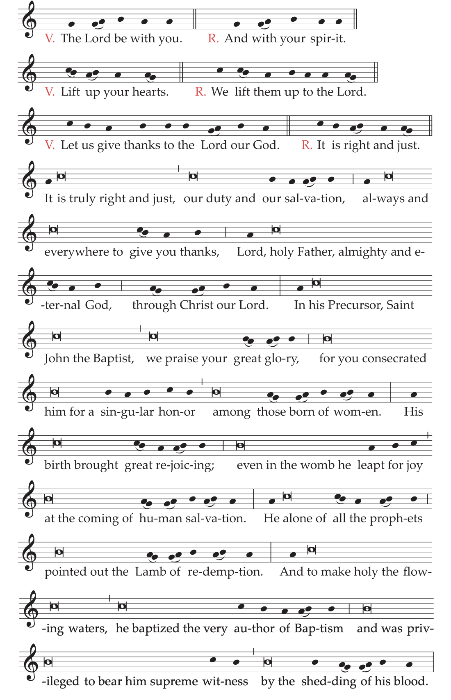
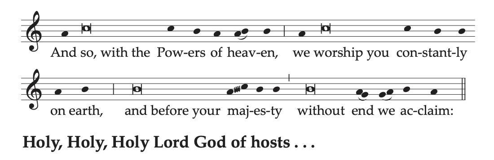
Communion AntiphonLk 1: 68
Blessed be the Lord, the God of Israel!
He has visited his people and redeemed them.
Prayer after Communion
May the marvelous prayer of Saint John the Baptist
accompany us who have eaten our fill
at this sacrificial feast, O Lord,
and, since Saint John proclaimed your Son
to be the Lamb who would take away our sins,
may he now implore for us your favor.
Through Christ our Lord.
13. Saint Joseph
In this Mass, the color white is used.
Entrance AntiphonCf. Lk 12: 42
Behold a faithful and prudent steward,
whom the Lord set over his household.
Collect
O God, who in your inexpressible providence
were pleased to choose Saint Joseph
as spouse of the most holy Mother of your Son,
grant, we pray,
that we, who revere him as our protector on earth,
may be worthy of his heavenly intercession.
Through our Lord Jesus Christ, your Son,
who lives and reigns with you in the unity of the Holy Spirit,
God, for ever and ever.
Prayer over the Offerings
As we prepare to offer the sacrifice of praise, O holy Father,
we humbly ask to be sustained in our service
by the prayers of Saint Joseph,
whom you called to watch like a father on earth
over your Only Begotten Son.
Who lives and reigns for ever and ever.
Preface: The mission of Saint Joseph.
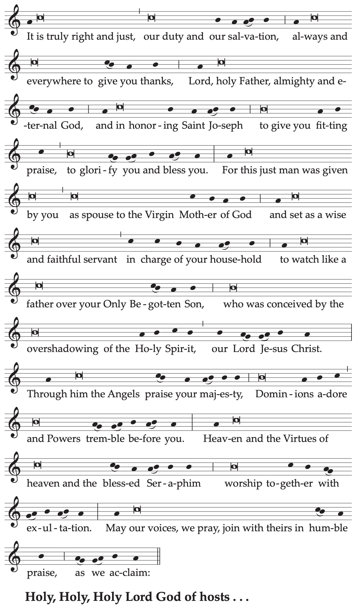
Text without music:
V. The Lord be with you.
R. And with your spirit.
V. Lift up your hearts.
R. We lift them up to the Lord.
V. Let us give thanks to the Lord our God.
R. It is right and just.
It is truly right and just, our duty and our salvation,
always and everywhere to give you thanks,
Lord, holy Father, almighty and eternal God,
and in honoring Saint Joseph
to give you fitting praise,
to glorify you and bless you.
For this just man was given by you
as spouse to the Virgin Mother of God
and set as a wise and faithful servant
in charge of your household
to watch like a father over your Only Begotten Son,
who was conceived by the overshadowing of the Holy Spirit,
our Lord Jesus Christ.
Through him the Angels praise your majesty,
Dominions adore and Powers tremble before you.
Heaven and the Virtues of heaven and the blessed Seraphim
worship together with exultation.
May our voices, we pray, join with theirs
in humble praise, as we acclaim:
Holy, Holy, Holy Lord God of hosts...
Communion AntiphonMt 25: 21
Well done, good and faithful servant;
come, share your master’s joy.
Prayer after Communion
Restored by these life-giving Sacraments, Lord,
may we live for you always in justice and holiness,
helped by the example and intercession of Saint Joseph,
who in carrying out your great mysteries
served you as a man just and obedient.
Through Christ our Lord.
14. All the Holy Apostles
In this Mass, the color red is used.
Entrance AntiphonJn 15: 16
It was not you who chose me, says the Lord,
but I who chose you and appointed you to go and bear fruit,
fruit that will last (E.T. alleluia).
Collect
May your Church always exult, O Lord,
in the honor given through the ages to the blessed Apostles,
that she may be guided by these protectors,
in whose teaching and merits she finds joy.
Through our Lord Jesus Christ, your Son,
who lives and reigns with you in the unity of the Holy Spirit,
God, for ever and ever.
Prayer over the Offerings
Pour out on us, Lord, your Holy Spirit,
whom you poured in abundance upon the Apostles,
that we may recognize what you have given us through them
and duly offer the sacrifice of praise to your glory.
Through Christ our Lord.
Communion AntiphonMt 19: 28
You who have followed me will sit on thrones,
judging the twelve tribes of Israel, says the Lord.
Prayer after Communion
Grant that we may persevere, O God,
with rejoicing and simplicity of heart
in the teaching of the Apostles,
in the breaking of the bread,
and in the prayers.
Through Christ our Lord.
15. Saints Peter and Paul, Apostles
In this Mass, the color red is used.
Entrance Antiphon
Peter the Apostle, and Paul the teacher of the Gentiles:
these have taught us your law, O Lord.
Collect
Grant, we pray, O Lord our God,
that we may be sustained by the intercession
of the blessed Apostles Peter and Paul,
that, as through them you gave your Church
the foundations of her heavenly office,
so through them you may help her to eternal salvation.
Through our Lord Jesus Christ, your Son,
who lives and reigns with you in the unity of the Holy Spirit,
God, for ever and ever.
Prayer over the Offerings
We bring offerings to your altar, O Lord,
as we glory in the commemoration
of the blessed Apostles Peter and Paul,
so that the more we doubt our own merits,
the more we may rejoice that we are to be saved
by your loving kindness.
Through Christ our Lord.
Preface: The twofold mission of Peter and Paul in the Church.
V. The Lord be with you.
R. And with your spirit.
V. Lift up your hearts.
R. We lift them up to the Lord.
V. Let us give thanks to the Lord our God.
R. It is right and just.
It is truly right and just, our duty and our salvation,
always and everywhere to give you thanks,
Lord, holy Father, almighty and eternal God.
For by your providence
the blessed Apostles Peter and Paul bring us joy:
Peter, foremost in confessing the faith,
Paul, its outstanding preacher,
Peter, who established the early Church from the remnant of Israel,
Paul, master and teacher of the Gentiles that you call.
And so, each in a different way
gathered together the one family of Christ;
and revered together throughout the world,
they share one Martyr’s crown.
And therefore, with all the Angels and Saints,
we praise you, as without end we acclaim:
Holy, Holy, Holy Lord God of hosts...
Text with music:
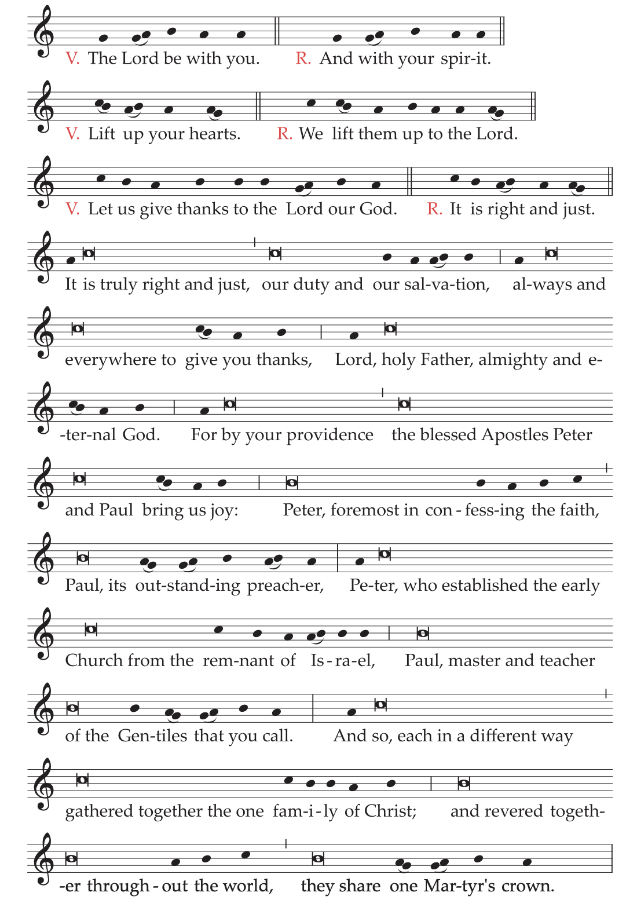
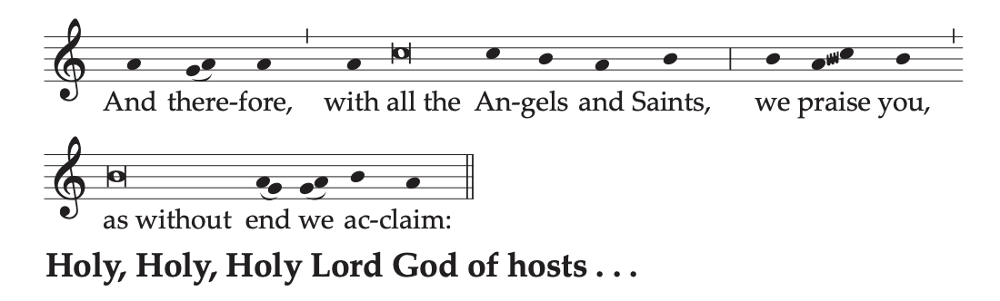
Communion AntiphonCf. Jn 21: 15, 17
Simon, Son of John, do you love me more than these?
Lord, you know everything; you know that I love you.
Prayer after Communion
By this heavenly Sacrament, O Lord, we pray,
strengthen your faithful,
whom you have enlightened with the teaching of the Apostles.
Through Christ our Lord.
16. Saint Peter, Apostle
In this Mass, the color red is used.
Entrance AntiphonLk 22: 32
The Lord says to Simon Peter:
I have prayed for you that your faith may not fail,
and once you have turned back, strengthen your brothers.
Collect
O God, who gave the keys of the Kingdom of Heaven
to your blessed Apostle Peter
and handed over to him
the pontifical office of binding and loosing,
grant, we pray, that through the help of his intercession
we may be set free from the bonds of our sins.
Through our Lord Jesus Christ, your Son,
who lives and reigns with you in the unity of the Holy Spirit,
God, for ever and ever.
Prayer over the Offerings
Receive with favor your people’s oblation,
O Lord, we pray,
as we commemorate the blessed Apostle Peter,
for you taught him by a hidden revelation
to confess you, the living God, and the Christ your Son,
and led him to bear witness to his Master
by means of a glorious passion.
Through Christ our Lord.
Communion AntiphonCf. Mt 16: 16, 18
Peter said to Jesus: You are the Christ, the Son of the living God.
And Jesus replied: You are Peter,
and upon this rock I will build my Church.
Prayer after Communion
Having been admitted, O Lord, to the banquet of salvation
as we venerate the memory of the blessed Apostle Peter,
we ask with gladness
that we may always hold fast to your Son,
who alone has the words of life,
so that, as faithful sheep of your flock,
we may be happily led to eternal pastures.
Through Christ our Lord.
17. Saint Paul, Apostle
In this Mass, the color red is used.
Entrance Antiphon2 Tm 1: 12; 4: 8
I know the one in whom I have believed
and I am sure that he, the just judge, the mighty,
will keep safe what is my due until that day.
Collect
Lord God, who in a wondrous way
chose the blessed Apostle Paul to preach the Gospel,
grant, we pray, that the whole world
may be imbued with that faith
which he brought before rulers and nations,
for the unceasing growth of your Church.
Through our Lord Jesus Christ, your Son,
who lives and reigns with you in the unity of the Holy Spirit,
God, for ever and ever.
Prayer over the Offerings
As we celebrate the divine mysteries, O Lord, we pray,
may the Spirit fill us with that light of faith
by which he constantly enlightened the blessed Apostle Paul
for the spreading of your glory.
Through Christ our Lord.
Communion AntiphonGal 2: 20
I live by faith in the Son of God,
who has loved me and given himself up for me.
Prayer after Communion
Grant Lord, to those refreshed
by communion in the Body and Blood of your Son,
that Christ himself may be life to us,
that nothing may separate us from his love,
and that, attentive to the teaching of the blessed Apostle Paul,
we may walk in charity with our neighbor.
Through Christ our Lord.
18. One Holy Apostle
In this Mass, the color red is used. The Mass of his Feast is said. But if he is honored together with another Apostle and the texts of the Mass are not appropriate for that Apostle, the following Mass is said with the color red.
Entrance AntiphonPs 96 (95): 2-3
Proclaim the salvation of God day by day;
tell among the nations his glory.
Collect
Strengthen in us, O Lord, the faith,
by which the blessed Apostle N.
clung wholeheartedly to your Son,
and grant that through the help of his prayers
your Church may become for all the nations
the sacrament of salvation.
Through our Lord Jesus Christ, your Son,
who lives and reigns with you in the unity of the Holy Spirit,
God, for ever and ever.
Prayer over the Offerings
As we bring you these offerings
in commemoration of the blessed Apostle N.,
we pray, O Lord,
that, living by his example in a manner worthy of the Gospel of Christ,
we may work together for the faith it teaches.
Through Christ our Lord.
Communion AntiphonLk 22: 29-30
I confer a kingdom on you,
just as my Father has conferred one on me,
that you may eat and drink
at my table in my kingdom, says the Lord.
Prayer after Communion
As we celebrate the memory of the blessed Apostle N.,
we have received the pledge of eternal salvation, O Lord,
and we pray that it may be of help to us,
both now and for the life to come.
Through Christ our Lord.
19. All Saints
In this Mass, the color white is used.
Entrance Antiphon
The souls of the Saints are rejoicing in heaven,
the Saints who followed the footsteps of Christ,
and so now exult with Christ for ever.
Collect
O God, fount of all holiness,
make us each walk worthily in our vocation,
through the intercession of your Saints,
on whom you bestowed
a great variety of graces on earth
and a single glorious reward in heaven.
Through our Lord Jesus Christ, your Son,
who lives and reigns with you in the unity of the Holy Spirit,
God, for ever and ever.
Prayer over the Offerings
May these offerings we bring in honor of all the Saints
be pleasing to you, O Lord,
and grant that, just as we believe the Saints
to be already assured of immortality,
so we may experience their concern for our salvation.
Through Christ our Lord.
Communion AntiphonMt 5: 8-10
Blessed are the clean of heart, for they shall see God.
Blessed are the peacemakers, for they shall be called children of God.
Blessed are they who are persecuted for the sake of righteousness,
for theirs is the Kingdom of Heaven.
Prayer after Communion
O God, who refresh us with the one Bread
and sustain us with one hope,
strengthen us likewise, we pray, by your grace,
that, as we are one with your Saints,
one body and one spirit in Christ,
we may rise with him to glory.
Who lives and reigns for ever and ever.